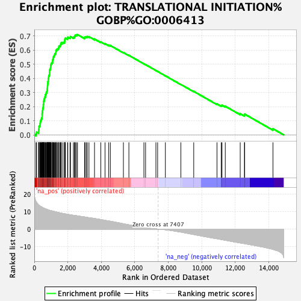
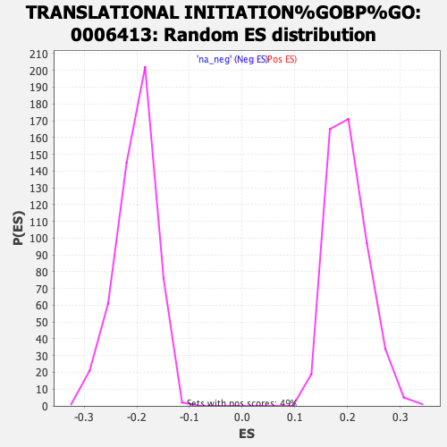

| | | Dataset | tel_exp_collapsed |
| Phenotype | NoPhenotypeAvailable |
| Upregulated in class | na_pos |
| GeneSet | TRANSLATIONAL INITIATION%GOBP%GO:0006413 |
| Enrichment Score (ES) | 0.71047294 |
| Normalized Enrichment Score (NES) | 3.549405 |
| Nominal p-value | 0.0 |
| FDR q-value | 0.0 |
| FWER p-Value | 0.0 |
Table: GSEA Results Summary

Fig 1: Enrichment plot: TRANSLATIONAL INITIATION%GOBP%GO:0006413
Profile of the Running ES Score & Positions of GeneSet Members on the Rank Ordered List
| PROBE | GENE SYMBOL | GENE_TITLE | RANK IN GENE LIST | RANK METRIC SCORE | RUNNING ES | CORE ENRICHMENT | | 1 | RBM4 | | | 99 | 15.885 | 0.0079 | Yes |
| 2 | RPL41 | | | 135 | 15.363 | 0.0196 | Yes |
| 3 | RPS27A | | | 257 | 13.814 | 0.0241 | Yes |
| 4 | RPLP1 | | | 262 | 13.755 | 0.0364 | Yes |
| 5 | RPS27 | | | 279 | 13.630 | 0.0478 | Yes |
| 6 | RPL17 | | | 282 | 13.597 | 0.0601 | Yes |
| 7 | EIF4A1 | | | 335 | 13.259 | 0.0688 | Yes |
| 8 | RPL30 | | | 344 | 13.203 | 0.0803 | Yes |
| 9 | RPL18A | | | 360 | 13.065 | 0.0913 | Yes |
| 10 | RPL19 | | | 381 | 12.937 | 0.1018 | Yes |
| 11 | RPL9 | | | 413 | 12.789 | 0.1114 | Yes |
| 12 | RPS4X | | | 446 | 12.619 | 0.1208 | Yes |
| 13 | UBA52 | | | 463 | 12.539 | 0.1312 | Yes |
| 14 | RPL4 | | | 464 | 12.530 | 0.1427 | Yes |
| 15 | RPL11 | | | 468 | 12.492 | 0.1540 | Yes |
| 16 | RPL24 | | | 478 | 12.446 | 0.1648 | Yes |
| 17 | RPS12 | | | 498 | 12.370 | 0.1748 | Yes |
| 18 | RPS2 | | | 508 | 12.280 | 0.1855 | Yes |
| 19 | PABPC1 | | | 526 | 12.177 | 0.1955 | Yes |
| 20 | RPS28 | | | 535 | 12.157 | 0.2061 | Yes |
| 21 | RPL28 | | | 539 | 12.124 | 0.2170 | Yes |
| 22 | RPL7 | | | 555 | 12.067 | 0.2270 | Yes |
| 23 | RPS29 | | | 556 | 12.062 | 0.2381 | Yes |
| 24 | RPL18 | | | 589 | 11.927 | 0.2469 | Yes |
| 25 | RPL14 | | | 601 | 11.853 | 0.2570 | Yes |
| 26 | RPS11 | | | 615 | 11.803 | 0.2669 | Yes |
| 27 | RPS17 | | | 658 | 11.656 | 0.2748 | Yes |
| 28 | RPLP2 | | | 664 | 11.604 | 0.2851 | Yes |
| 29 | RPL38 | | | 697 | 11.483 | 0.2934 | Yes |
| 30 | RPL8 | | | 725 | 11.394 | 0.3020 | Yes |
| 31 | RPS19 | | | 752 | 11.246 | 0.3106 | Yes |
| 32 | RPS13 | | | 772 | 11.196 | 0.3196 | Yes |
| 33 | RPS6 | | | 778 | 11.182 | 0.3295 | Yes |
| 34 | RPLP0 | | | 785 | 11.156 | 0.3393 | Yes |
| 35 | RPL37A | | | 790 | 11.122 | 0.3492 | Yes |
| 36 | RPS24 | | | 799 | 11.075 | 0.3588 | Yes |
| 37 | RPL23 | | | 806 | 11.050 | 0.3686 | Yes |
| 38 | RPL3 | | | 816 | 11.029 | 0.3781 | Yes |
| 39 | RPL5 | | | 837 | 10.953 | 0.3867 | Yes |
| 40 | RPL36 | | | 839 | 10.952 | 0.3967 | Yes |
| 41 | RPL34 | | | 855 | 10.914 | 0.4057 | Yes |
| 42 | RPL10A | | | 862 | 10.876 | 0.4153 | Yes |
| 43 | RPL12 | | | 885 | 10.818 | 0.4237 | Yes |
| 44 | RPL10 | | | 907 | 10.770 | 0.4321 | Yes |
| 45 | RPL13 | | | 914 | 10.753 | 0.4416 | Yes |
| 46 | RPS23 | | | 917 | 10.751 | 0.4513 | Yes |
| 47 | RPL21 | | | 919 | 10.740 | 0.4611 | Yes |
| 48 | RPS8 | | | 956 | 10.634 | 0.4684 | Yes |
| 49 | RPL39 | | | 972 | 10.589 | 0.4771 | Yes |
| 50 | RPS20 | | | 980 | 10.578 | 0.4863 | Yes |
| 51 | RPL32 | | | 986 | 10.572 | 0.4957 | Yes |
| 52 | RPL22 | | | 1008 | 10.526 | 0.5039 | Yes |
| 53 | EIF3H | | | 1045 | 10.442 | 0.5110 | Yes |
| 54 | RPL15 | | | 1092 | 10.346 | 0.5174 | Yes |
| 55 | RPS26 | | | 1095 | 10.336 | 0.5267 | Yes |
| 56 | RPS15A | | | 1105 | 10.318 | 0.5356 | Yes |
| 57 | RPL37 | | | 1136 | 10.246 | 0.5430 | Yes |
| 58 | EIF3G | | | 1139 | 10.239 | 0.5522 | Yes |
| 59 | RPS14 | | | 1176 | 10.144 | 0.5591 | Yes |
| 60 | RPL27A | | | 1203 | 10.067 | 0.5665 | Yes |
| 61 | EIF3I | | | 1228 | 9.988 | 0.5741 | Yes |
| 62 | EIF5 | | | 1274 | 9.900 | 0.5801 | Yes |
| 63 | RPL23A | | | 1294 | 9.851 | 0.5878 | Yes |
| 64 | RPL35A | | | 1297 | 9.839 | 0.5967 | Yes |
| 65 | EIF3M | | | 1325 | 9.783 | 0.6039 | Yes |
| 66 | MCTS1 | | | 1382 | 9.646 | 0.6089 | Yes |
| 67 | EIF3K | | | 1444 | 9.487 | 0.6135 | Yes |
| 68 | RPL26 | | | 1463 | 9.446 | 0.6209 | Yes |
| 69 | RPS7 | | | 1473 | 9.429 | 0.6290 | Yes |
| 70 | EIF2S3 | | | 1549 | 9.251 | 0.6324 | Yes |
| 71 | RPS21 | | | 1564 | 9.212 | 0.6399 | Yes |
| 72 | RPS10 | | | 1598 | 9.136 | 0.6460 | Yes |
| 73 | RPL27 | | | 1612 | 9.106 | 0.6535 | Yes |
| 74 | EIF3D | | | 1710 | 8.924 | 0.6551 | Yes |
| 75 | EIF3L | | | 1806 | 8.764 | 0.6567 | Yes |
| 76 | RPL7A | | | 1809 | 8.761 | 0.6646 | Yes |
| 77 | RPL29 | | | 1825 | 8.729 | 0.6716 | Yes |
| 78 | RPS15 | | | 1829 | 8.721 | 0.6794 | Yes |
| 79 | EIF3C | | | 1855 | 8.688 | 0.6857 | Yes |
| 80 | RPS3 | | | 1986 | 8.477 | 0.6846 | Yes |
| 81 | RPL36A | | | 2001 | 8.456 | 0.6914 | Yes |
| 82 | EIF2B3 | | | 2133 | 8.224 | 0.6901 | Yes |
| 83 | EIF2B4 | | | 2163 | 8.179 | 0.6957 | Yes |
| 84 | EIF4G1 | | | 2335 | 7.909 | 0.6913 | Yes |
| 85 | MTIF2 | | | 2404 | 7.799 | 0.6939 | Yes |
| 86 | RPS5 | | | 2414 | 7.789 | 0.7004 | Yes |
| 87 | EIF3E | | | 2446 | 7.764 | 0.7054 | Yes |
| 88 | RPS25 | | | 2512 | 7.671 | 0.7081 | Yes |
| 89 | RPS3A | | | 2580 | 7.565 | 0.7105 | Yes |
| 90 | EIF2D | | | 3004 | 6.954 | 0.6882 | No |
| 91 | RPL31 | | | 3025 | 6.924 | 0.6932 | No |
| 92 | EIF2B2 | | | 3102 | 6.795 | 0.6943 | No |
| 93 | RPS16 | | | 3166 | 6.704 | 0.6962 | No |
| 94 | RPL35 | | | 3266 | 6.533 | 0.6955 | No |
| 95 | EIF2S1 | | | 3597 | 6.051 | 0.6787 | No |
| 96 | DHX29 | | | 3974 | 5.468 | 0.6583 | No |
| 97 | EIF4A2 | | | 4225 | 5.034 | 0.6460 | No |
| 98 | EIF3F | | | 4446 | 4.670 | 0.6354 | No |
| 99 | EIF3J | | | 4543 | 4.515 | 0.6331 | No |
| 100 | EIF2S2 | | | 5323 | 3.049 | 0.5832 | No |
| 101 | EIF2B1 | | | 5651 | 2.454 | 0.5633 | No |
| 102 | RPSA | | | 6548 | 0.942 | 0.5036 | No |
| 103 | EIF4H | | | 6648 | 0.794 | 0.4976 | No |
| 104 | ABCE1 | | | 7265 | 0.103 | 0.4560 | No |
| 105 | PAIP1 | | | 7368 | 0.031 | 0.4492 | No |
| 106 | EIF3A | | | 7830 | -0.345 | 0.4183 | No |
| 107 | MTIF3 | | | 8755 | -1.674 | 0.3573 | No |
| 108 | EIF4B | | | 9525 | -3.069 | 0.3082 | No |
| 109 | EIF4E | | | 10914 | -5.485 | 0.2193 | No |
| 110 | EIF3B | | | 11166 | -5.946 | 0.2078 | No |
| 111 | EIF1AX | | | 11215 | -6.047 | 0.2101 | No |
| 112 | DENR | | | 11410 | -6.351 | 0.2028 | No |
| 113 | LARP1 | | | 12302 | -7.898 | 0.1498 | No |
| 114 | EIF2B5 | | | 12555 | -8.279 | 0.1403 | No |
| 115 | RPL13A | | | 12567 | -8.301 | 0.1472 | No |
| 116 | DDX3X | | | 14258 | -11.582 | 0.0435 | No |
Table: GSEA details [plain text format]

Fig 2: TRANSLATIONAL INITIATION%GOBP%GO:0006413: Random ES distribution
Gene set null distribution of ES for TRANSLATIONAL INITIATION%GOBP%GO:0006413